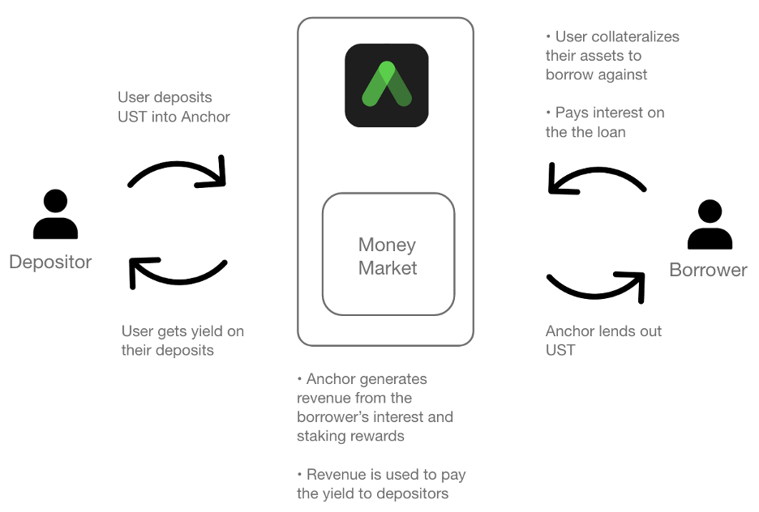
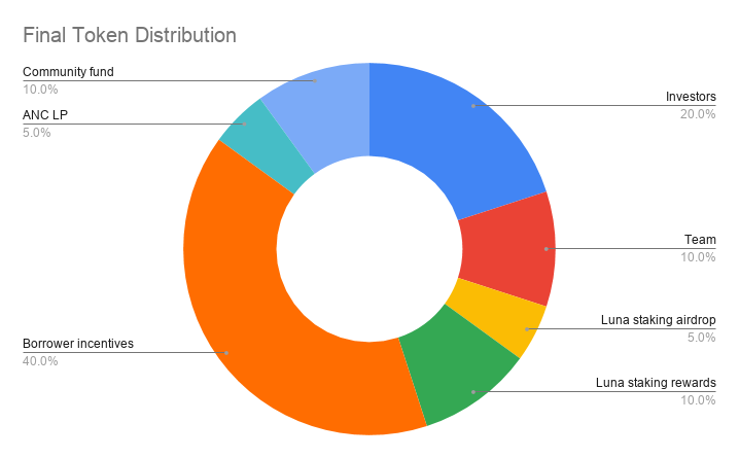
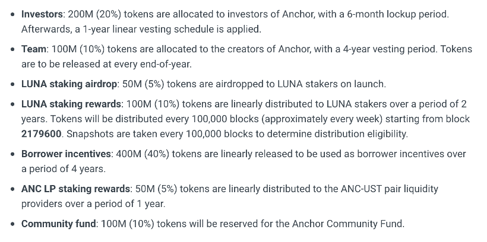
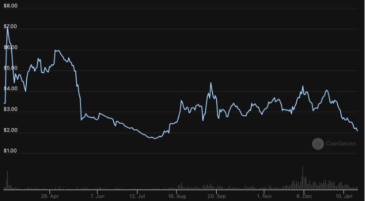
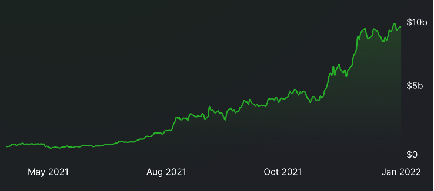
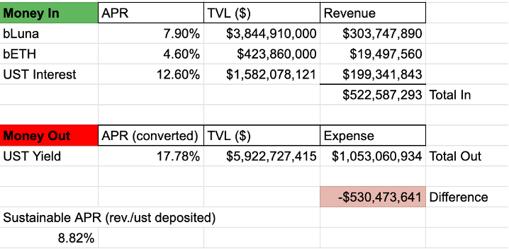
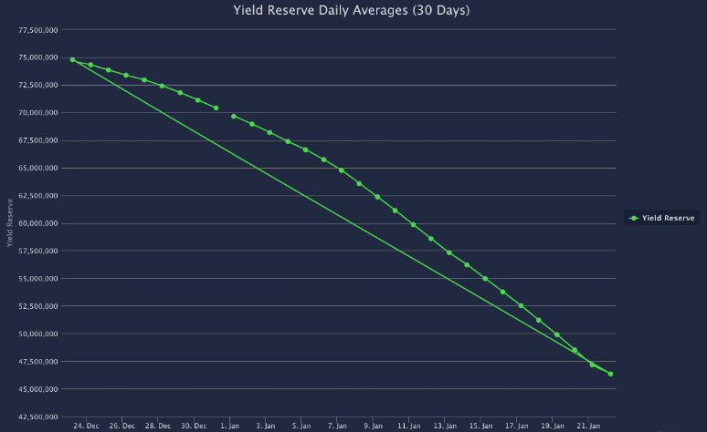
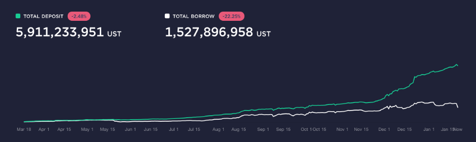

Anchor Protocol: The Best Savings Account in Crypto
Jan 24, 2022
As LUNA surpasses Binance Smart Chain to become the 2nd largest chain by TVL , the LUNA ecosystem has gained significant traction in 2021. In particular, its premier DeFi app Anchor Protocol accounts for about half of all the TVL in the LUNA ecosystem. This simple yet powerful DeFi app currently has $10.5b in TVL and features one of the best stablecoin yield in all of crypto at about a 19.5% APY. Let’s look at the main features of this protocol, how it works, how it compares to other DeFi protocols, the ANC token, and we’ll finish off by going over its sustainability.
What is Anchor Protocol?
Anchor is a DeFi app on the Terra ecosystem that allows users to earn yield on their UST stablecoins, take out UST loans using collateralized assets, and provide liquidity for the ANC-UST Terraswap pair. Anchor’s main product 'Earn' allows users to earn a steady 19.5% APY yield on UST deposits. It’s one of the best stablecoin yields in crypto, given how easy it is to use and all you have to do is deposit UST into the ‘Earn’ section to start earning interest.
Summary of Anchor
Anchor Protocol is built by Terraform Labs and launched on Terra’s mainnet in March 2021. The backbone of the protocol is the Terra money market - a smart contract on the Terra blockchain that facilitates the borrowing and lending of stablecoins in a trustless and permissionless manner. The protocol pays out yield to depositors and lends out UST to borrowers who provide collateral with no third party involved.
Borrowers that are looking to take out a loan on their assets can do so by collateralizing ETH or LUNA (and soon SOL and ATOM). They can do so by bonding their assets by converting them into bEHT or bLUNA. This allows the protocol to earn the block rewards of the underlying asset and makes them fundable and transferable.
Users can provide liquidity in the ANC-UST Terraswap Pair to get an APR of about 60% (at the time of this writing). Holders of the ANC token can stake it on the protocol to earn about a 19% APR. The yield comes from protocol fees that are distributed to ANC stakers to incentivize governance participation and decrease circulating ANC supply.
How is the yield generated?
Before we get into how the yield generated, some context is needed for the interest rate. The team behind Anchor set out a goal to offer a stable interest rate. This interest rate, known as the Anchor Rate, is the target rate that Anchor aims to offer its depositors from the revenue it collects.
The 19.5% APY that’s paid to depositors comes from two sources – borrower’s interest and the yield from collateralized assets. When a user deposits UST on Anchor, their deposit is pooled into the Anchor money market and lent out when borrower want to take out a loan. To take out a loan, a borrower has to provide collateral to take a loan against. When the loan is paid back, the borrower must also pay the interest for borrowing UST. Anchor receives revenue from the yield of the collateralized assets and the borrower’s interest.
The borrower’s interest rate is determined by an interest rate algorithm based on borrowing demand and supply. A key input to the algorithm is the Terra pool utilization ratio, which represents the fraction of Terra in the pool that is borrowed. When the utilization ratio is high, the algorithm charges more interest to the borrowers and pays more to the depositors. Inversely, when the utilization ratio is low, the algorithm charges less interest to the borrowers and pays less to the depositors. This is meant to incentivize borrowing when the borrowing demand is low (lower borrowing interest) and disincentivize borrowing when the borrowing demand is high (higher borrowing interest).
Since the revenue can fluctuate depending on the demand of borrowers, Anchor has another mechanism to maintain the stability of the Anchor Rate, known as the ‘yield reserve’. The yield generated from the collateralized assets is paid to the depositors, but when the yield of those assets is greater than the Anchor Rate, the excess yield is put in the yield reserve. And when the yield from those assets is less than the Anchor Rate, the difference will come from the yield reserve until it is depleted.
Anchor’s Principal Protection
To ensure that all deposits are safe, Anchor has a liquidation mechanism to make sure loans don’t end up defaulting. Liquidators monitor risky loans and can submit a bid to the Liquidation Contract, offering to purchase the liquidated collateral in exchange for UST. For example, suppose Bob takes out a loan of 2000 UST and puts down $6000 worth of collateral, giving him a LTV ratio of 33%. If the value of his collateral drops below $4000, that would exceed a LTV of 50%, deeming the loan risky. His loan will be partially liquidated to ensure that the loan remains over-collateralized and therefore keeps the deposits safe
Some important notes on Anchor’s Principal Protection:
- Only loans with a total collateral value of above 2,000 UST are partially liquidated. Loans with a total collateral value of under 2,000 UST are fully liquidated.
- Anchor uses an oracle to provide a price feed for the collateralized assets.
- Users can participate in the liquidations by going to the ‘Borrow’ section of Anchor.
How does Anchor compare to other DeFi protocols?
In terms of the protocol mechanisms, Anchor takes a lot of similarities to other DeFi protocols such as Compound or Aave. All three of these protocols have a money market where depositors can earn yield and borrowers can take out loans. But unlike Anchor, Compound and Aave offer variable APY yield based on the ratio of depositors and borrowers, which can fluctuate dramatically. This is because borrowers can collateralize assets that don’t generate block rewards, such as stablecoins or bitcoin. On Anchor, borrowers can only collateralize assets with block rewards.
Anchor’s token and tokenomics
ANC is the governance token for the Anchor protocol. It is used to create and vote on governance proposals, earn protocol fees from staking, and distributed to borrowers as incentives.
The ANC token distribution is shown below along with the vesting schedule. Investors get 20% of the supply with a 6-month lockup period, following a 1-year linear vesting schedule. The team will get a 10% allocation with a 4-year vesting period, with the tokens releasing every end-of-year. 55% of the supply is used as rewards for being a participant in the Terra ecosystem by borrowing on Anchor (40%), staking LUNA (10%), or from a free airdrop to early LUNA stakers (5%).

According to Coingecko, ANC currently trades at $2.12 with a market cap of $441,893,101 and a fully diluted valuation (FDV) of $2,124,377,021. Based on the documentation, the value of ANC tokens is supposed to grow proportionally with Anchor's AUM, since holders of the token are earning staking and fee rewards. While this was the plan on paper, the reality is that the value of ANC has not appreciated alongside the growth of Anchor’s AUM. Anchor’s current TVL is $10.5b, which is not close to Anchor’s market cap nor FDV. The price of ANC has been stagnating while the TVL on Anchor has grown substantially.
So why has the price not gone up? It all comes down to supply and demand. Based on the vesting schedule, 475 million tokens will be unlocked in the first year, which is almost 50% of the total supply of 1 billion tokens. This creates huge selling pressure from users who earn the token from borrowing, staking yield, and VCs. This is shown in the price action of ANC - whenever there’s a spike in liquidity, sellers immediately sell into it. As far as the demand goes, there is not much utility for the token, at least not enough utility to create a demand that is greater than the selling pressure. The reality is most people will not participate in governance and staking a highly inflationary token is not a good idea if you’re an investor. Anchor has a buyback program that uses the fees that it collected to buy back ANC tokens, but it distributes those tokens back to users of the protocol.
The ANC tokenomics are set up to bootstrap the usage of the protocol and incentivize borrowers to take out loans. So far, the value of the token has not kept up with the value of the TVL, due to the high initial inflation and low buying demand. By year 3, the inflation will dramatically decrease with the majority of selling pressure coming from borrowing incentives, possibly allowing the token to appreciate due to less selling pressure.
ANC Price
ANC TLV, DeFi Llama
Is Anchor’s ~20% APY sustainable?
At a high level, the way it works is the revenue from the borrowers is used to pay the yield to the depositors. The money coming into the protocol has to be more than the money going out. At the current depositor/borrower ratio, the APY is not sustainable (emphasis on current). Currently, the protocol’s revenue is generating $522,587,293. The expense of paying the yield to depositors is $1,053,060,934. Which leads to a deficit of $530,473,641. The protocol currently brings in about half of the revenue that is needed to pay the 19.5% APY to depositors.
The yield reserve has been helping the Anchor Rate remain stable, but it has been consistently depleting since December 2021. The reserve had about 75 million dollars, of which $70 million was injected from Terra Form Labs to subsidize the yield while they integrate new collaterals. The yield reserve currently has about 46 million, and at this rate, it will probably run out in less than 100 days. Given the rapid growth in TVL, the reserve will continue to go down until it is depleted, and the APY will have to go down.
Anchor's yield reserve, source

With Anchor’s current balance sheet, a sustainable APR is 8.82% (not taking into account the yield reserve). Given the current market conditions, most market participants are looking to put their money into stablecoins to get a stable yield as opposed to holding volatile crypto assets (de-risking). This can be seen in the historical chart – the amount borrowed was keeping up with the deposits. But in December 2021, the deposits have been outpacing borrowers, which will continue to add to the deficit. So, it’s probably a good idea to get that sweet 19.5% APY while you still can.
A path to a sustainable 20% APY
If Anchor wants to continue to offer a 20% APY for the long term, it needs to find more ways to increase the revenue so that it keeps up with the expenses. As mentioned before, Anchor is working on adding more collateralized assets such as SOL, ATOM, and DOT. Given that these assets are close to a combined 60 billion market cap, capturing a small percentage as collateral can help increase its revenue. Doing some quick maths, if 3 billion dollars of new assets are deposited and assuming they generate a 6% APR, that adds an additional 180 million dollars in revenue. Additionally, since most of UST deposited is not lent out to borrowers, and therefore remains underutilized, they can put that capital to work in other protocols to generate some extra yield. Even if they are only able to offer a stable 15% APY on UST that is still miles ahead of what local banks offer.
Resources:
- Anchor Protocol Docs
- Anchor's Whitepaper
- https://agora.terra.money/t/bolstering-anchors-sustainability/1516
- https://wantfi.com/terra-luna-anchor-protocol-savings-account.html
- https://medium.com/coinmonks/forget-banks-earn-20-fixed-income-on-your-savings-in-anchor-protocol-d0f4833c901f